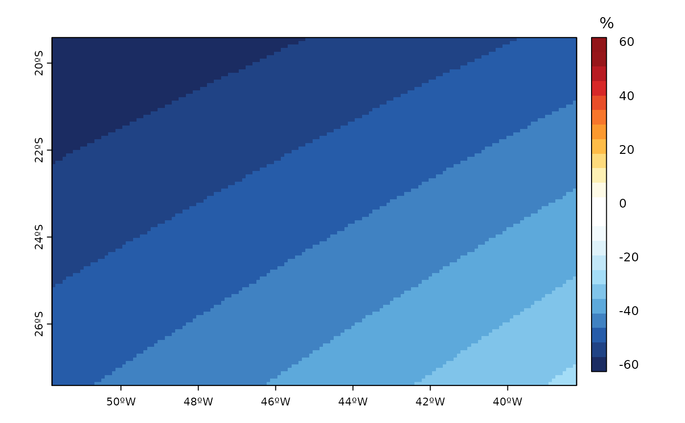

Custon difference plots (x - y) of plot for SpatRaster (terra R-package) object based on terra package
Usage
plot_diff(
x,
y,
col,
absolute = T,
relative = T,
lim_1 = NA,
lim_2 = NA,
units = c("", expression("%")),
...
)Examples
folder <- system.file("extdata",package="eva3dm")
wrf <- paste0(folder,"/wrfinput_d01")
A <- wrf_rast(wrf,'XLAT')
B <- wrf_rast(wrf,'XLONG')
plot_diff(A,B,int = 2)
